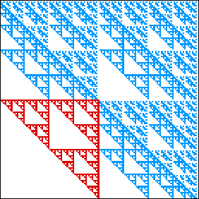
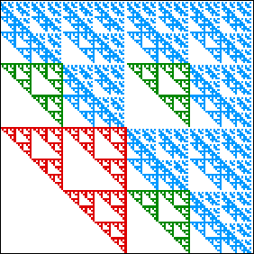
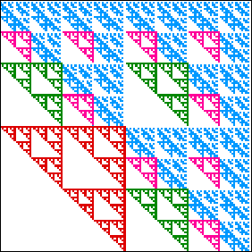
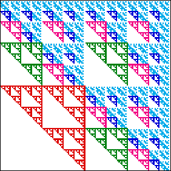

Because
The regions with the second-largest number of points are those whose addresses contain exactly one 1.
Continuing, we find
|  |  |
| a gasket of side length 1/2 in the square with address 1, | three gaskets of side length 1/4 in the squares with addresses 21, 31, and 41, |
|  |  |
| nine gaskets of side length 1/8 in the squares with addresses 221, 231, 241, 321, 331, 341, 421, 431, and 441, | 27 gaskets of side length 1/16 in the squares with addresses 2221, 2231, 2241, 2321, 2331, 2341, 2421, 2431, 2441, 3221, 3231, 3241, 3321, 3331, 3341, 3421, 3431, 3441, 4221, 4231, 4241, 4321, 4331, 4341, 4421, 4431, and 4441. |
Unlike our earlier examples of iterative constructions, here successive generations both remove parts of previously added squares, and add new squares.
To find the dimension of this set, we focus on the gaskets and determine the squares that will stay empty as consequence of the gasket structure.
From the number of empty squares, we can determine the number of occupied squares, hence the dimension.
| The calculation is simple, but involves several steps, so is presented on another page. |
Return to Dimension of the Second-Highest Section.